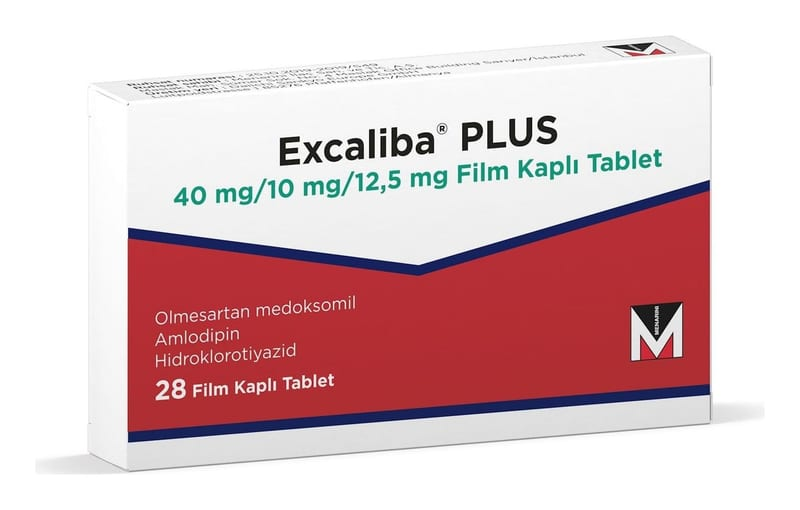

Excaliba Plus 40 mg/10 mg/12.5 mg Film Kaplı Tablet, 84 Tablet

Ne için kullanılır
KT · Bölüm 1EXCALİBA PLUS olmesartan medoksomil, amlodipin (amlodipin besilat olarak) ve hidroklorotiyazid adında üç etkin madde içerir. Üç madde de yüksek kan basıncını (yüksek tansiyonu) kontrol etmeye yardımcı olur.
EXCALİBA PLUS 28 ve 84 adet, bir yüzünde C55 yazılı, 9,5 mm grimsi kırmızı, yuvarlak film kaplı tablet halinde kullanıma sunulmuştur.
Olmesartan medoksomil kan damarlarını gevşeterek kan basıncını düşüren “anjiyotensin II reseptör antagonisti” denilen bir ilaç grubuna dahildir.
Amlodipin, “kalsiyum kanal blokörleri” olarak adlandırılan bir madde grubuna dahildir. Amlodipin de kan damarlarını gevşeterek kan basıncını düşürür.
Hidroklorotiyazid tiyazid diüretikleri (“su tabletleri”) olarak adlandırılan bir ilaç grubudur. Böbreğinizin daha fazla idrar üretmesini sağlayarak vücudunuzun fazla sudan kurtulmasına yardımcı olup kan basıncını düşürür.
Bu maddelerin etkileri kan basıncınızın düşürülmesine katkıda bulunur.
EXCALİBA PLUS:
sabit doz kombinasyonu olarak alınan olmesartan medoksomil ve amlodipin kombinasyonunda kan basıncı yeterli oranda kontrol edilemeyen yetişkin hastalarda veya
olmesartan medoksomil ve hidroklorotiyazid sabit doz kombinasyonu ile amlodipini tek bir tablet veya olmesartan medoksomil ve amlodipin sabit doz kombinasyonu ile hidroklorotiyazidi tek bir tablet olarak zaten almakta olan hastalarda.
yüksek kan basıncı tedavisinde kullanılır.